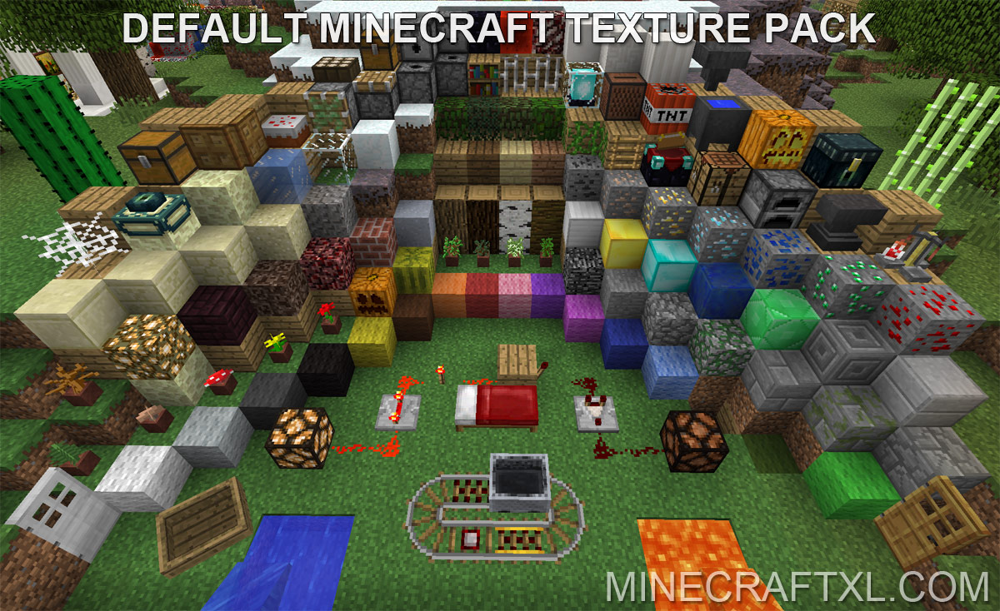
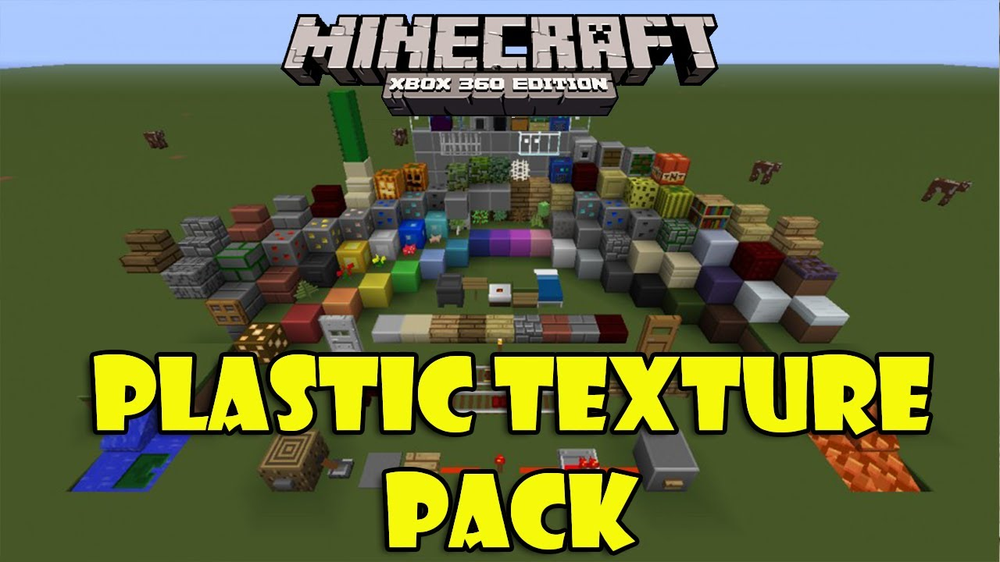
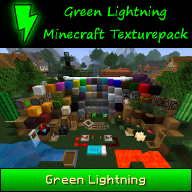
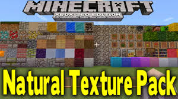

Minecraft is a survival game with 3D blocks created by Mojang, where you start off with nothing and build you own world. This game allows you to dig/mine for resources, farm, tame and kill animals, for food and build/craft different with the resources that you have obtained. Minecraft is not all that easy, you must survive against hunger, dangers of the world, and from the enemies. The Minecraft community has taken this platform that Mojang has given them and made it so you can do so much more.
The Minecraft community has made many servers where you can play different game modes online. Some of the game modes that the community has made are:
There are 2 main creators of Minecraft. It was originally created by Markus Alexej Persson, aka "Notch". Then later developed and published by Mojang mainly Jens Bergensten aka "Jeb".
Markus Alexej Persson is a Swedish video game programmer and designer. He began programming on his fathers computer at the age of seven. At the age of eight he produced his first game. Later he worked at King.com for around 4 years. He later designed Minecraft which he eventually passed over to Mojang.
Jens Bergensten is a video game designer that took a major part in programming Minecraft after the Company took it over.
Texture packs is a visual addition that alters the visual experience for Minecraft players some texture packs are:
   Back to Top
© PARAM BHATT 2018